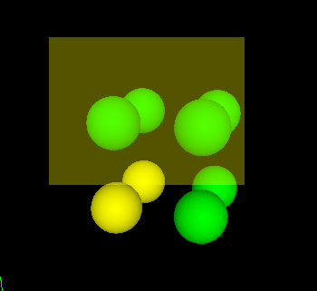
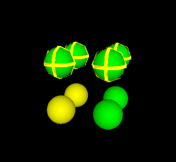

Basic Tools
On the left pane, several tools are available for creating selections
| Tool | Description |
|---|---|
| Hide Selected | Hides the currently selected atoms. |
| Unhide All | Renders all atoms visible. |
| Select Type | Selects all atoms of some type. Use dropdown to select type. Holding down shift will remove atoms from the selection. |
| Invert Selection | Inverts the selection status of all atoms. |
| Deselect All | Removes all atoms from the selection. |
Additionally, atoms can be selected/deselected in the viewport using the "Box Select" tool.
|

Once active, click and drag to select all atoms within a box, or click on individual atoms to select them individually. Holding down shift will remove atoms from the selection, instead of adding them.
 |
 |